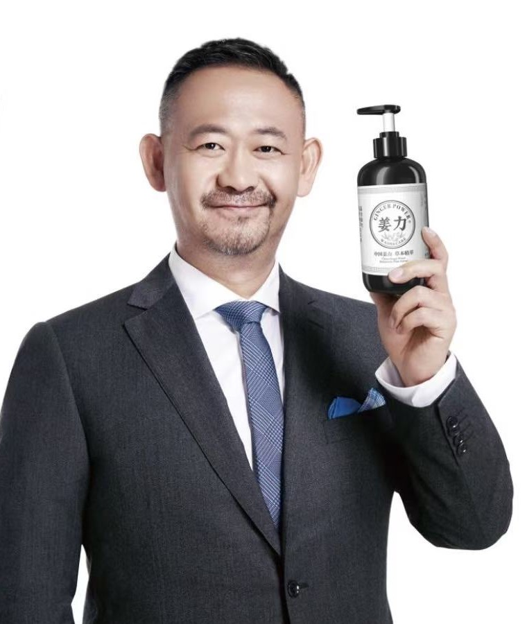

姜力头道 · 轻自测
✳
你目前可以关注
初步参考你的照片记录仅作本次记录，尚未进行图像分析
01
先了解一下
02
今天可以试试
03
接下来留意
本报告根据你的回答整理，供日常养护参考，不代表图像检测或医疗诊断。持续明显掉发、红肿或疼痛，建议咨询皮肤科。
 姜力头道头皮与发丝养护给自己一点关心
姜力头道头皮与发丝养护给自己一点关心容易出油、发尾干，还是最近掉发有点多？
花 30 秒，找到今天的养护关注点。

CARE STARTS WITH YOU先做一个轻自测回答 3 题，领取初步养护报告
现在开始想再深入了解？添加微信，沟通进一步测评方式
按真实感受选择就好，没有标准答案。
从今天的感受里，找到一个小小的养护起点。
你的照片记录仅作本次记录，尚未进行图像分析
本报告根据你的回答整理，供日常养护参考，不代表图像检测或医疗诊断。持续明显掉发、红肿或疼痛，建议咨询皮肤科。